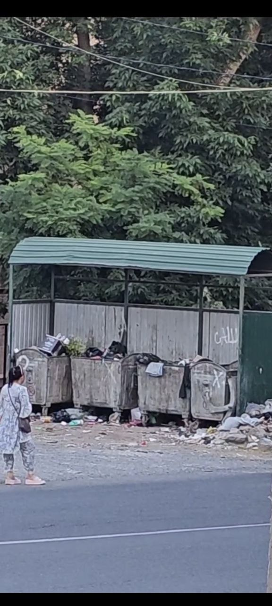

1. "TOZA-GROUP" offers mobile digitized machines for collecting secondary waste to shops and supermarkets!

2.How would you like it to be?
Such?
Or is it like this?

TozaUz offers a stationary digitized waste collection machine for mahallas, multi-story buildings, and supermarkets! Designed for mahallas and multi-story buildings, it operates through the "TozaUz" app. While the world is searching for ways to sort waste, the "TozaUz" team works through the national "TozaUz" program, which clearly shows how waste is packaged, when it is collected, by whom, and how much money is allocated for the sorted waste. This approach will transform the public's attitude and interest towards waste management.
3."TOZA-GROUP" offers 1 cubic meter containers for household waste to legal entities and individuals!
The "TozaUz" team has invented the 1 cubic meter containers with a QR code digitized system, allowing you to place an order only when waste is collected. The revolutionary innovation is that the more waste you dispose of, the less you pay. All of this can be controlled through the fully digitized system via the "TozaUz" Telegram bot. "TOZA-GROUP" operates in the manner that best suits your needs.

4. "TOZA-GROUP" offers 15-20 cubic meter containers for household and construction waste to legal entities and individuals!